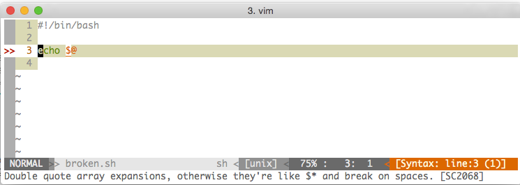

Writing robust Shell scripts
Because shell rocks
Why should I care?
Because you need something quick, and oh yes let's write a shell script
And then end up with a flying spaghetti monster
I'll write my new amazing project in bash -- said no one ever
srsly?

2001: iTunes "installer"
A small shell script (wink wink) that removes the old version
rm -rf $2/Applications/iTunes.app 2
$2 is the name of the drive where iTunes is being installed on.
... but is not quoted, so if the drive contains a space in the name, this resulted in deleting drives with similar names. i.e
# installing on "Disk 1"
rm -rf Disk 1/Applications/iTunes.app 2
# figuring out what happened to the disk named "Disk" is left as an exercise
2011: One space too much
The author of bumblebee was trying to cleanup a bunch of stuff
rm -rf /usr /lib/nvidia-current/xorg/xorg
Whoops!
2015: Steam clusterfuck
STEAMROOT="$(cd "${0%/*}" && echo $PWD)"
# ...
reset_steam() {
# ...
rm -rf "$STEAMROOT/"*
# ...
}
When steam.sh is invoked with --reset
it tries to remove the ~/.steam directory.
Except when launched with
bash steam.sh so that $0 is steam.sh,
cd fails, $STEAMROOT is empty and the rm.. well.
RHEL: just restart squid!
restart() {
stop
RETVAL=$?
if [ $RETVAL -eq 0 ] ; then
rm -rf $SQUID_PIDFILE_DIR/*
start
...
}
At this point should be clear what happened sometimes to $SQUID_PIDFILE_DIR
... and which user init scripts run as :-)
Outline
- sane coding style (it helps a lot)
set -eset -uset -o pipefail- be careful with
$? - shellcheck
Coding style (ymmv)
- no tabs, use 2 spaces. Do not leave trailing spaces
- Variables:
$THIS_IS_A_GLOBALor exported variable$_this_is_another_var: the_at the beginning makes the code more readable by separating the dollar sign- use
localfor var declared inside functions - function names with underscores as in
this_is_a_fun() {}
Coding style (cont.)
Pipes should be multiline
find "${_keyspace}" -name "${SNAPNAME}" -print0 | \
xargs -r0 sh -c 'find "$@" -type f -print0' subfind | \
tar -c -a -O --null -T - 2>/dev/null | \
/usr/local/bin/gof3r put -b "${S3BUCKET}" -k "${S3_KS_PATH}" 2>&1
.. even if some people prefer to have the pipe at the beginning of the line
set -e (a.k.a. nazi mode)
set -e simply terminates the script with exit code = 1 if:
if a simple command (see SHELL GRAMMAR above) exits with a non-zero status. The shell does not exit if the command that fails is part of the command list immediately following a while or until keyword, part of the test in a if statement, part of an && or || list, or if the command's return value is being inverted via !"
WAT?
#!/bin/bash
set -e
echo 'ciao' | grep -q 'hi'
echo 'you will not see this message'
[giacomo:~] $ bash test.sh
[giacomo:~] $ echo $?
1
set -e (CONT.)
#!/bin/bash
set -e
echo "ciao" | grep -q "hi" || echo "not found"
echo 'this *will* be printed'
[giacomo:~] $ bash test.sh
not found
this *will* be printed
set -e (CONT.)
set -e is tricky, has a lot of quirks
and is generally speaking a PITA
but is really helpful to avoid unexpected behaviours.
Just be sure to echo all the things *before* executing as any failing command can quit the script
#!/bin/bash
set -e
echo "trying this and that"
my_command arg1 arg2
echo "Everybody stand back, I'm gonna try some science"
my_other_command
# you probably get it
You can always temporarly disable it using set +e -- just don't abuse!
set -u
Always useset -u
Makes the script exit with error if a variable is used but undefined.
Don't overtrust, it can't help when a variable is declared and set to an empty variable
#!/bin/bash
set -u
echo "Hi $1"
[giacomo:~] $ bash test.sh gild
Hi gild
[giacomo:~] $ bash test.sh
test.sh: line 5: $1: unbound variable
set -u (cont.)
Use defaults or test for args (for "$@")
#!/bin/bash
set -e
set -u
_from_env=${MY_ENV_VAR:-default_value}
_target="gild"
[ $# -eq 1 ] && _target="$1"
echo "From env: $_from_env , target: $_target"
[giacomo:~] $ bash test.sh
From env: default_value , target: gild
[giacomo:~] $ bash test.sh you
From env: default_value , target: you
[giacomo:~] $ MY_ENV_VAR="env is cool" bash test.sh you
From env: env is cool , target: you
set -o pipefail
The return code of a pipe is the return code of the last command
[giacomo:~] $ echo "hi" | grep -q "ciao" | ls >/dev/null
[giacomo:~] $ echo $?
0
grep -q fails, but ls does not, so the pipe exit with success
Adding set -o pipefail to the script will make the pipe fail if any of the command fails
#!/bin/bash
set -o pipefail
set -e
echo "hi" | grep -q "ciao" | ls >/dev/null
echo "you won't see this line"
set -o pipefail (cont.)
You can get the various exit codes looking them up in the$PIPESTATUS array.
echo test | fail_command | something_else
local _ret_pipe=( ${PIPESTATUS[@]} )
# from here, `PIPESTATUS` is not available anymore
Return codes and $?
Keep in mind that $? *must* be accessed right after the
command itself (like $PIPESTATUS).
Also, when using set -e the script will fail before that :)
set +e
which mongo &>/dev/null
if [ $? -ne 0 ]; then
echo "Installing mongo tools"
sudo apt-key adv --keyserver hkp://keyserver.ubuntu.com:80 --recv 7F0CEB10
echo 'deb http://downloads-distro.mongodb.org/repo/ubuntu-upstart dist 10gen' | sudo tee /etc/apt/sources.list.d/mongodb.list
sudo apt-get update
sudo apt-get install -y mongodb-org-tools=${mongodb_tools_version} mongodb-org-shell=${mongodb_tools_version}
fi
set -e
Saving $? to a local variable for later uses is a good pratice as well
shellcheck
Finally, install shellcheck in your editor, this will check for common mistakes.
